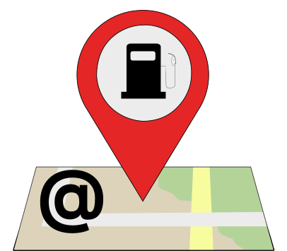
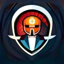

Bit-Scripts
Nos Projets


Marv
Un bot discord en NodeJS qui utilise chatGPT et un système de synthèse et de reconnaissance vocale permettant d’intéragir avec le bot grâce à la voix.

Matrix
Un projet en Python qui transforme votre caméra en Ascii Art vert, un peu comme dans Matrix.

Low-Fuel
Un projet en Python avec une interface avec Kivy, l’application permet de connaître dans un certain rayon d’action autour d’une adresse, le carburant de votre choix le moins cher.

Marv Web Bot
Un site web qui reprend le concept de Marv mais directement sur le Web pour le rendre accessible à tout le monde.

Matrix CPP
Le projet Python Matrix qui transforme votre caméra en Ascii Art vert, un peu comme dans Matrix, entièrement refait en c++ (uniquement pour Linux).

Snake Game
Snake Game est un jeu où le joueur dirige un serpent cherchant à manger des pommes. Généré avec l'IA ChatGPT d'OpenAI via le bot Discord Marv, il offre une expérience améliorée tout en restant classique.

BitGuardian
BitGuardian est un bot Discord de modération qui attribue un rôle aux nouveaux membres et enregistre les messages utilisateur. Facilitant la gestion des serveurs, il améliore l'expérience utilisateur et offre un support extensible pour des fonctionnalités personnalisées.
Rsscript
Rsscript est un projet open source de bot Discord qui a pour but de lire les flux RSS et de les transmettre dans un salon Discord spécifique.